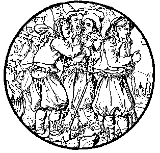

|
1. Demad ha joa barzh ar ger-man
Pelec'h eo Anaig dre-man? 2. - En he gwele 'ma kousket dous, Eveshait ; na rit ket trouz 3. En he gwele emañ kousket, Eveshait, n'he dihunet ket !- 4. Kloareg Garlan dalc'h ma glevas, War-laez gant an diri bignas, 5. War-laez, ha ker skañv, a bignas, War skaoñ he gwele 'n em lakaas 6. - Sav alese, Naig Kalvez, Ra 'z aimp hon-daou d'al leur nevez! 7. - D'al leur nevez me n'az in ket, Rag eno zo un den displed; 8. Gwasañ denjentil zo er bed, Hag eñ atav kas va c'haoued. 9. - Na pa vez kant aotrou eno, N'az pezo droug ebet ganto ; 10. Na pa vez kant aotrou eno, D'al leur nevez ni a yelo ! 11. Ni a yelo d'al leur nevez, Ha ni zañso kerkoulz hag e.- 12. He brozig gloan he deus lakaet, Ha da heul he mignon eo aet. II 13. Markiz Gwerand a c'houlenne Gant an hostiz, an deiz a oe: 14. - Hostiz, hostiz, din leveret, N'hoc'h eus ket ar c'hloareg gwelet ? 15. - Aotrou markiz, em zigaret, Ne c'houzon piv a c'houlennet. 16. - Ho tigareziñ ! me n'her gran ! Kloareg Garlan a c'houlennan ! 17. - Aet eo du-se, evit an deiz, Ur plac'hig koant hed e gostez 18. Aet int du-se d'al leur nevez, Koant ha drant o-daou, war va feiz ! |
19. Gantañ d'e dog ur bluñv pavenn,
Ha diouc'h e gerc'henn ur chadenn 20. Ha diouc'h e gerc'henn ur chadenn, Zo kouezet holl war e varlenn. 21. Ganti ur c'horkennig brodet, Hag ur voulouzenn arc'hantet; 22. Ganti he c'horkennig eured, Dimezet ez int, me a gred. III 23. Markiz Gwerand, enkrezet bras, Raktal war e varc'h ruz lampas ; 24. War e varc'h raktal e lammas; Ha d'al leur nevez ez eas. 25. - Kloareg, diwisk da borpansoù, Evit gouren war ar gwestloù. 26. Kloareg, diwisk da borpansoù, Ha ni reio ur peg pe zaou. 27. -Salokras, markiz, ne rin ket. C'hwi zo aotrou, me n'em on ket ; 28. C'hwi zo mab an itron Gwerand, Ha me zo mab ur plouezant. 29. - Evidout mab ur plouezant, Te c'heus dibab ar merc'hed koant. 30. - Aotrou markiz, em zigaret, N'eo ket me 'meus hi dibabet 31. Markiz Gwerand, em zigaret. Gant Doue eo bet din roet.- 32. Annaig Kalvez a grene, Oc'h o c'hlevout o komz giz-se. 33. Tavit, va mignon, deomp d'ar gêr, Hemañ a rey deomp poan ha nec'h. 34. - A-raok, kloareg, lavar din-me : Na te oar c'hoari ar c'hleze ? 35. - Biskoazh kleze n'em eus douget, C'hoari penn-bazh, lavaran ket. |
36. - Na te c'hoarife ganin-me :
Ur paotr taer, a glevan out-te 37. - Aotrou denjentil, va fenn-bazh Na dalv ho kleze lemm ha noazh. 38. Aotrou denjentil na rin ket, Ho kleze a vez saotret. 39. - Mard eo va c'hleze saotret, E-barzh da wad a vo gwalc'het.- 40. Naig, p'he deus gwelet redek, Rede gwad he mignon kloareg 41. Annaig, en ur strafuilh bras, Da vlev ar markiz a sailhas. 42. Da vlev ar markiz a sailhas, Hag en-dro d'al leur e stlejas. 43. - Tec'h tu-se, markiz traitour, Te c'heuz lazhet va c'hloareg paour ! IV 44. Naig Kalvez o tont en-dro, Leun he daoulagad a zaeroù. 45. - Va mammig vat, ma em c'haret Va gwele din-me a refet 46. Va gwele din-me a refet aes ; Rag va c'halonig zo diaes. 47. - Ho kalon a zo diaezet, Va merc'h, dre m'hoc'h eus re zanset, 48. - Va mamm, n'em eus ket re zanset. Markiz fall en deus hen lazet ! 49. Markiz Gwerand, an traitour, En deus lazhet va c'hloareg paour ! 50. C'hwi a lavaro d'ar c'hleuzier, Pa zeuio d'e gerc'hat d'ar gêr : 51. «Na daol tamm douar war e vez : E berr va merc'h a yey ivez. » 52. Pa n'omp bet kousket er gwelead, Ni gousko hon-daou er toullad 53. Pa n'omp bet eureujet er bed, Dirak Doue vimp eureujet.- |
|
(P. 45)
âgée de 83 ans (en 1835) Gwerz |